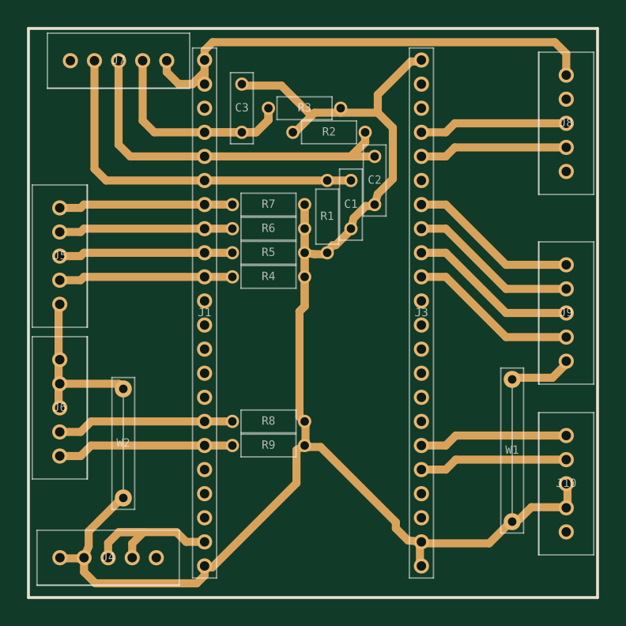
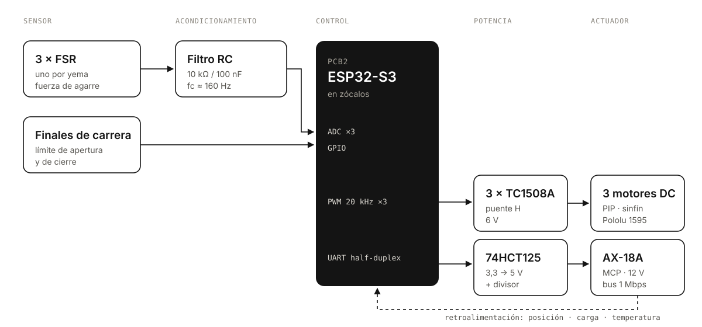
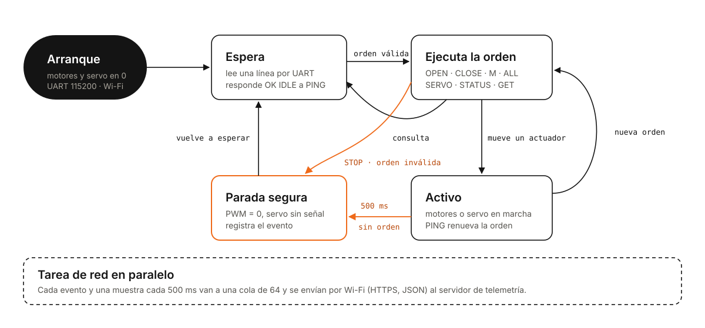

Arranque seguro
Resistencias de 10 kΩ a GND mantienen los motores apagados mientras arranca el ESP32, y cada FSR pasa por un filtro RC de 10 kΩ / 100 nF.
● Electrónica y control
Distribución de potencia, sensores, enlace con el servo y el firmware del ESP32-S3.
● Electrónica
Ramas separadas por fusible, con reserva de 2200 µF y 1000 µF. Tarjetas a una sola cara, pistas a 45° y conectores JST XH para cambiar módulos sin soldar.
Fusible principal y fusibles de 3 A / 2 A por rama.
Rama dedicada con reserva de capacitancia.
Drivers TC1508A, uno por dedo.
ESP32-S3; el USB queda separado para programar.


Resistencias de 10 kΩ a GND mantienen los motores apagados mientras arranca el ESP32, y cada FSR pasa por un filtro RC de 10 kΩ / 100 nF.
Half-duplex por un solo cable con protocolo Dynamixel: buffer 74HCT125 de 3,3 V a 5 V y divisor que protege al ESP32. Se eliminó el shield intermedio.
Un FSR por yema hacia el ADC del ESP32, finales de carrera de apertura y cierre, y la posición, carga y temperatura que reporta el servo.

● Programa de control
El ESP32-S3 recibe órdenes de texto por UART a 115200 baudios (8N1), controla los tres motores con PWM a 20 kHz y el servo, y envía telemetría a un servidor de la universidad. Si no llega una orden válida en 500 ms, detiene todo.
| Orden | Qué hace |
|---|---|
OPEN n · CLOSE n | Abre o cierra la instancia n: 1–3 son los motores de los dedos y 4 el servo. |
STOP n · STOP | Detiene una instancia o todo el gripper. |
M n pwm · ALL a b c | PWM de −100 a +100 % en un motor o en los tres. |
SERVO µs | Pulso del servo; 0 lo deshabilita. |
STATUS · PING | Lee las consignas o renueva la orden activa. |
Una orden inválida también detiene los motores y quita la señal del servo.
Cada evento y una muestra cada 500 ms se envían por Wi-Fi en JSON, con cola de 64 eventos.
